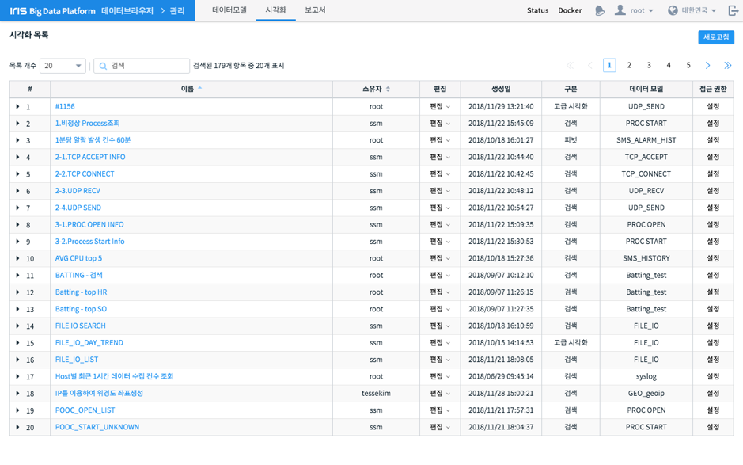
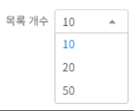
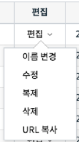
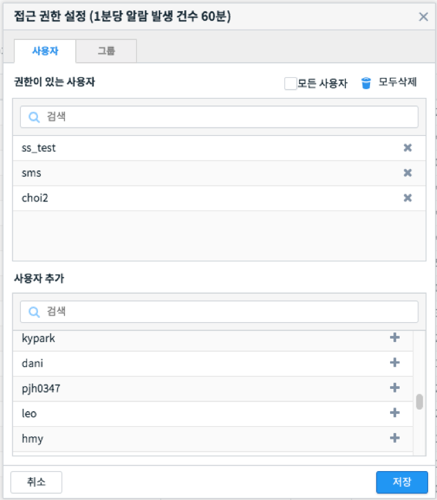

3.6. 분석 템플릿¶
시각화는 분석 화면에서 검색 조건과 여러가지 설정 정보를 담고 있는 일종의 템플릿입니다. 시각화 관리 화면에서는 각 화면에서 사용자가 작성하여 저장한 시각화 객체들을 수정하거나 삭제할 수 있습니다. 또한 특정 시각화를 다른 사용자가 접근할 수 있도록 권한을 부여할 수도 있습니다.
번호 |
구분 |
설명 |
|
|---|---|---|---|
1 |
새로고침 버튼 |
시각화 목록을 다시 불러와 갱신합니다. |
|
2 |
목록 설정 |
그리드에 표시되는 항목들을 필터링하거나 선택할 수 있습니다. |
|
3 |
시각화 목록 |
이름 |
시각화의 이름 |
소유자 |
시각화 내용을 작성/저장한 사용자 |
||
작업 |
시각화 편집/복사/삭제 기능 |
||
생성일 |
시각화 생성일시 |
||
구분 |
시각화 유형 혹은 시각화를 저장한 분석 화면 이름 |
||
데이터 모델 |
시각화의 데이터 모델 정보 |
||
접근 권한 |
접근 권한 설정 기능 |
||
상기 화면에서는 저장되어 있는 시각화 항목들을 확인할 수 있으며, 원하는 시각화를 빠르게 찾기 위한 목록 개수, 필터링 기능을 제공합니다. 특정 시각화를 펼치면 상세한 정보를 볼 수 있습니다. 또한, 원하는 시각화를 편집/복사/삭제를 할 수 있습니다.
3.6.1. 시각화 조회¶
사용자는 현재 저장되어 있는 시각화 항목들을 손쉽게 확인 할 수 있으며, 시각화 객체 관리에 필요한 편의 기능들을 제공합니다.
3.6.1.1. Option 1: 목록 개수¶
한 페이지에 표시되는 목록의 개수를 지정합니다.

3.6.1.3. Option 3: 페이징¶
원하는 목록의 페이지로 이동합니다.
3.6.1.4. Option 4: 상세보기¶
목록에서 모델명 좌측에 ▶ 아이콘을 클릭하면 데이터 모델의 상세정보를 표시합니다. 다시 ▼ 를 클릭하면 상세정보를 닫습니다.
3.6.1.5. Option 5: 작업¶
특정 시각화를 편집, 복사 하거나 삭제할 수 있습니다. 이름을 변경하거나, 시각화를 저장한 화면으로 이동하여 편집을 수행할 수 있고 URL 복사 기능으로 해당 시각화를 빠르게 접근할 수 있는 URL을 얻을 수도 있습니다.
3.6.2. 시각화 접근 권한 설정¶
특정 시각화를 다른 사용자가 접근할 수 있도록 사용자나 그룹 단위로 접근 권한을 설정할 수 있습니다.
번호 |
구분 |
설명 |
1 |
사용자/그룹 탭 |
사용자 혹은 그룹을 전환하기 위한 탭 |
2 |
모든 사용자 체크박스 |
모든 사용자에게 공유하고자 할 때 체크하는 설정 |
3 |
현재 권한 목록 |
현재 접근 권한을 가진 사용자 혹은 4)사용자 목록에서 추가한 권한을 부여하고자 하는 사용자 목록 |
4 |
사용자 목록 |
모든 사용자 목록. 《추가》 버튼을 클릭하면 3)현재 권한 목록에 추가됩니다. |